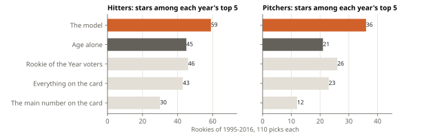
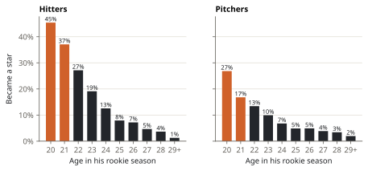

Lab note 7 of 7 · Rookie Report
Rookies: will he be a star?
Collectors, fans and front offices all ask the same thing about a rookie: is this the start of something? This experiment asks it of every rookie since 1932, tests the answer on rookies the model never saw, and turns it into the Rookie Report. The honest result: a model does find more future stars than the back of the card or the Rookie of the Year voters, and almost all of its edge comes from one number they ignore.
The question
- A rookie is a player in the season he first goes past 130 at-bats (a hitter) or 50 innings (a pitcher), the limits MLB uses for rookie status.
- A star is a rookie who makes at least two All-Star teams in the nine seasons after his rookie year. All-Star teams are what card prices and fame follow; they are also a popularity contest (fans vote, every club gets one), which the label inherits.
- The data is the Lahman Baseball Database: every season's statistics, birth dates, positions, All-Star teams and Rookie of the Year votes, © Sean Lahman, CC BY-SA 3.0, read from the R package Lahman (Lahman_14.0-0.tar.gz). Tables derived from it are shared under the same licence.
The test comes first
Before anything was built, the question was put to a test by time, like experiment 1: everything was fitted on the rookies of 1932-1994 and scored on the rookies of 1995-2016, whose nine following seasons are all in the data: 1,472 hitters (175 became stars) and 1,723 pitchers (108).
Five ways to rank a rookie class were compared: the main number on the card (OPS+ for hitters, ERA− for pitchers, both relative to the league), everything on the back of the card (average, home runs, runs batted in, steals, OPS+; wins, ERA−, strikeouts, saves), the share of Rookie of the Year points, age alone, and the model below. Each was turned into a probability by a logistic regression fitted on the training rookies.

| Ranked by | Hitters: log loss | AUC | Pitchers: log loss | AUC |
|---|---|---|---|---|
| Nothing (every rookie gets the base rate) | 0.368 | 0.500 | 0.238 | 0.500 |
| Everything on the back of the card | 0.330 | 0.730 | 0.218 | 0.743 |
| The Rookie of the Year voters | 0.343 | 0.650 | 0.231 | 0.607 |
| The model | 0.282 | 0.832 | 0.193 | 0.811 |
AUC is the chance that the model ranks a random future star above a random rookie who did not become one (0.5 is a coin flip, 1 is perfect). Resampling the test rookies, the model's log loss minus the card's lies between -0.059 and -0.037 for hitters and between -0.032 and -0.017 for pitchers (95%): below zero every time.
The model
A logistic regression on what a scout would ask first: how old is he, how much did he play (and how much before), where does he play (a shortstop or catcher who hits is rarer than a first baseman who does), and how good are his skills. For hitters the skills are his strikeout, walk and home run rates and his average on balls in play; for pitchers, strikeout, walk and home run rates. Each is measured against his league and season, so a 1968 rookie and a 2000 rookie are on the same scale.
The skills are shrunk toward the league's rate by empirical Bayes, the same idea as step 2 of experiment 1: a rate counts as his own only as far as his sample supports it. The fitted strengths say how much a season tells:
| Hitters' rate | Strength k |
|---|---|
| Strikeouts per plate appearance | 34 |
| Walks | 79 |
| Home runs | 79 |
| Hits on balls in play | 606 |
Strikeouts settle fast: after 34 plate appearances a rookie's strikeout rate is half his own. His average on balls in play needs 606 balls in play to be half his own, more than a full season: most of a rookie's batting average beyond his strikeouts and home runs is luck. That is where the report's "luck" line comes from.
What the edge is made of
| What goes in | Hitters: log loss | stars in top 5 | Pitchers: log loss | stars in top 5 |
|---|---|---|---|---|
| Age alone | 0.315 | 45 | 0.217 | 21 |
| Age and the back of the card | 0.286 | 57 | 0.200 | 32 |
| The model without shrinking | 0.286 | 60 | 0.194 | 35 |
| The model without age | 0.322 | 46 | 0.203 | 34 |
| The model | 0.282 | 59 | 0.193 | 36 |
Age alone beats everything on the back of the card for hitters, and beats the Rookie of the Year voters for both (the voters' log loss minus age's: the interval for hitters is -0.043 to -0.012). Take age out of the model and it loses most of its edge. Put age next to the card's numbers and you have nearly all of the model: for hitters the difference is -0.010 to 0.003, not measurable; for pitchers the model keeps a small, real edge (-0.014 to -0.001), from strikeouts with the luck taken out.

Why age? A 20-year-old rookie who holds his own has a decade of growth ahead; a 27-year-old with the same line is at his peak. Voters reward the best season, cards print it, and the birth date sits in small type in the corner.
His pitches don't help
Since 1988 Retrosheet has every pitch, which the card never shows: how often a hitter's swings miss, how often he swings, how often a pitcher makes hitters miss or throws a ball. Counted for every rookie of 1988-2003 and 2004-2016, shrunk like the other rates, and added to the model (fitted on 1988-2003, scored on 2004-2016):
| Hitters: log loss | stars in top 5 | Pitchers: log loss | stars in top 5 | |
|---|---|---|---|---|
| Age and the back of the card | 0.283 | 34 | 0.193 | 21 |
| The model | 0.285 | 38 | 0.189 | 23 |
| The model and the pitches | 0.285 | 41 | 0.190 | 24 |
The pitches' effect lies between -0.005 and 0.004 for hitters and -0.005 and 0.006 for pitchers: nothing measurable. A rookie's strikeouts already carry what his misses would say. A fancier model (gradient boosting) did worse than the plain logistic regression, with a few thousand rookies to learn from.
The report
The final models are fitted on every rookie whose nine seasons are in (1932-2016) and applied to the latest classes. For each rookie the report adds:
- The five most similar rookies since 1932. Similar in the model's own terms: each input is put on a common scale and weighted by how much it moves the odds, so two rookies of the same age, playing time and skills are close even if one hit .300 by luck. What became of them is the plainest way to read a probability.
- Luck. A hitter's average with his strikeouts and home runs as they were but an ordinary share of hits on balls in play (his own, shrunk); a pitcher's ERA rebuilt from his strikeouts, walks and home runs, shrunk (the FIP formula, on the league's ERA scale).
- Players from Japan's, Korea's or Taiwan's top leagues are marked: they arrive in MLB as grown pros, and the model's age penalty is unfair to them.
The percentages are calibrated: of the test hitters the model gave a 20%–35% chance, 24% became stars; 35%–50%, 49%; over 50%, 66%. At the low end it is a little generous: of the hitters it gave under 5% (on average 2.7%), 1.1% became stars.
What it can't see
Injuries, minor-league records, scouting reports, how hard he hits the ball, how his pitches move: professional projections use all of these, and none of them is free and open. The report is a well-tested reading of what is on every rookie's record, not a scouting report. New rookie classes arrive when the Lahman database publishes a season, usually early in the following year.